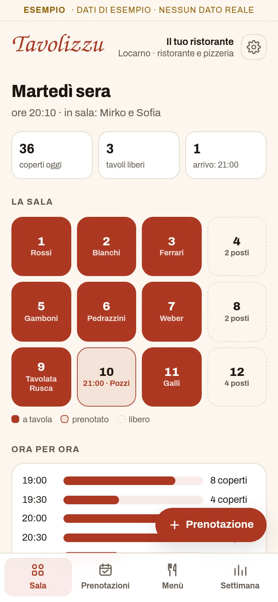
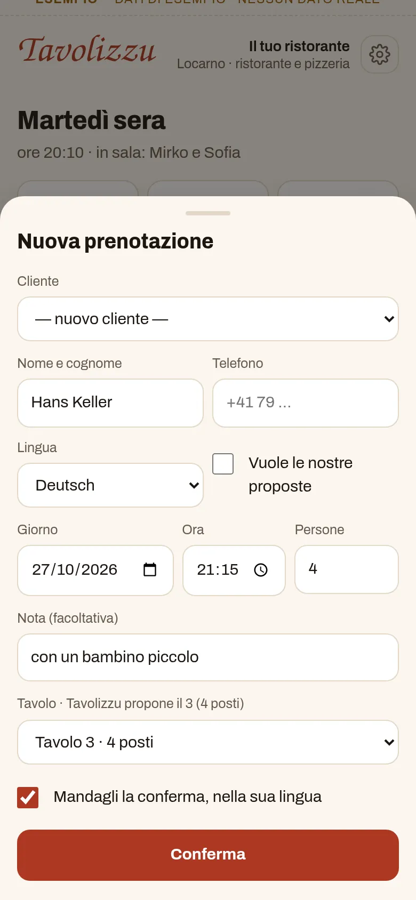
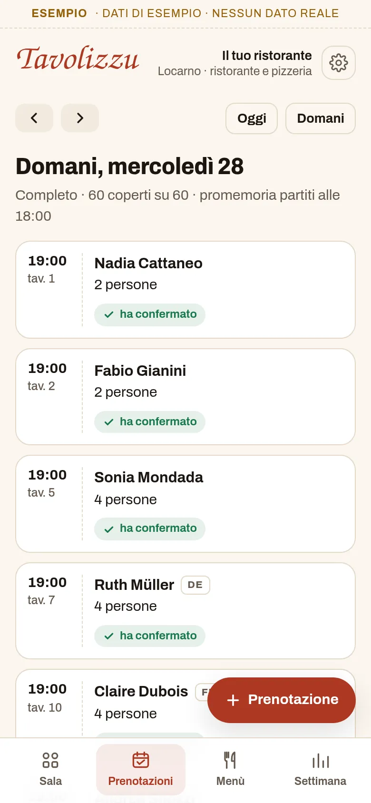
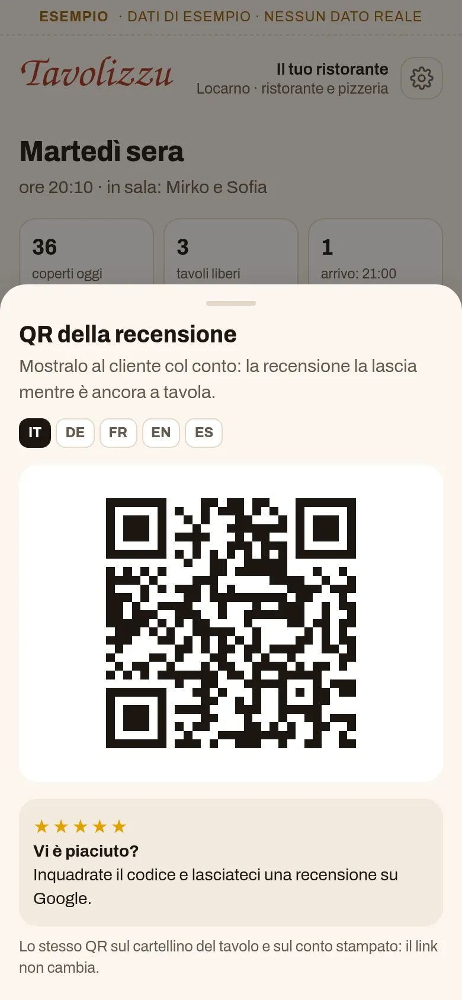
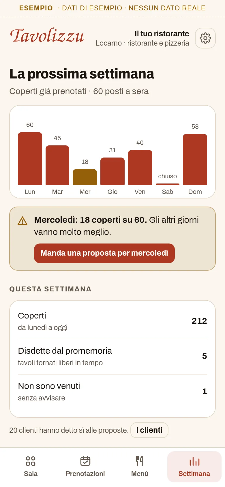

Per ristoranti, bar e pizzerie
Il gestionale per ristoranti e pizzerie
La sala di stasera, le prenotazioni con il tavolo giusto, i promemoria, la lista d'attesa e il menù con gli allergeni, con il QR per le recensioni. Da USD 3.99 al mese.
Si usa dal browser e si installa con un'icona, senza App Store.

Guardalo in azione
Meno di due minuti in sala, da stasera alla settimana che viene.
Demo con dati inventati. Nel video si vedono anche cose che arriveranno presto: le prenotazioni che arrivano da sole dal tuo sito e da Google, la disdetta con un tocco, gli avvisi che partono da soli e il menù del QR sul sito e sui tavoli. Il piatto del giorno nelle altre lingue, per ora, lo scrivi tu.
Che cosa fa
Tutto quello che oggi sta sul quaderno delle prenotazioni, nei messaggi e nella memoria di chi è in sala, in un posto solo.
Stasera
Sul telefono vedi tutta la serata: i coperti, i tavoli liberi e chi deve ancora arrivare, sulla pianta della sala e ora per ora.
Il tavolo giusto
Scrivi giorno, ora e persone: Tavolizzu propone il tavolo adatto tra quelli liberi. Con un tocco la prenotazione è fatta e il messaggio di conferma è pronto da mandare, nella lingua del cliente, su WhatsApp o per e-mail.
Presto: le prenotazioni dal tuo sito e da GooglePromemoria e lista d'attesa
Il giorno prima mandi il promemoria a ogni cliente, con un tocco. Se qualcuno disdice, lo segni e il tavolo torna libero subito: Tavolizzu ti dice chi avvisare per primo tra chi è in lista d'attesa, con il messaggio già scritto.
Presto: gli avvisi che partono da soli e la disdetta con un toccoIl menù e gli allergeni
Segni un piatto come esaurito con un tocco, scrivi il piatto del giorno, anche in tedesco, francese, inglese e spagnolo, e per ogni piatto segni quali dei 14 allergeni della normativa svizzera contiene.
Presto: il menù col QR per i clienti, sul sito e sui tavoliMartedì mezzo vuoto?
Vedi già oggi i giorni con pochi coperti e mandi una proposta solo ai clienti che hanno detto sì, ognuno nella sua lingua e con la frase per non riceverne più.
La recensione col QR
Con il conto mostri al cliente il QR della tua scheda Google: così può lasciare la recensione mentre è ancora a tavola. L'invito accanto al QR si legge in cinque lingue.




Schermate con dati di esempio.
Si installa senza App Store
Tavolizzu è un'app web: si apre dal browser e resta sul telefono con la sua icona, come le altre.
Apri tavolizzu.web.app con Safari, tocca Condividi e poi «Aggiungi alla schermata Home».
Apri tavolizzu.web.app con Chrome, tocca il menu ⋮ e poi «Installa app».
Con Chrome o Edge si installa dall'icona nella barra degli indirizzi. Funziona anche solo nel browser.
Prezzo
Un prezzo, tutta l'app
USD 3.99
al mese
USD 14.99
ogni 6 mesi
USD 24.99
all'anno
USD 74.99
una volta sola
Prezzi in dollari USA. Per ora Tavolizzu si acquista scrivendo a info@utoapps.ch: ti mandiamo il codice appena ricevuto il pagamento. Presto, con il pagamento online, i piani che si rinnovano avranno un mese di prova gratis, la prima volta che ti abboni (serve una carta).
Si apre con il tuo codice
Lo ricevi quando acquisti l'app. Sala, prenotazioni, lista d'attesa, menù e proposte, senza limiti. I dati restano nel telefono.
Installala sulla schermata Home e scarica una copia ogni tanto (Impostazioni): in Safari, senza installarla, i dati si possono perdere.
Te la installiamo noi
La installiamo sul tuo telefono con i tuoi tavoli, il tuo menù con gli allergeni che ci indichi, il link delle tue recensioni e, se vuoi, i tuoi clienti, e ti mostriamo come si usa. Il codice a vita è compreso.
CHF 290
una volta sola
La vuoi con il tuo logo?
Tavolizzu esiste in versione standard, così com'è, oppure su misura, con il tuo logo, i tuoi colori e le modifiche che ti servono. Per la versione su misura scrivi a info@utoapps.ch.